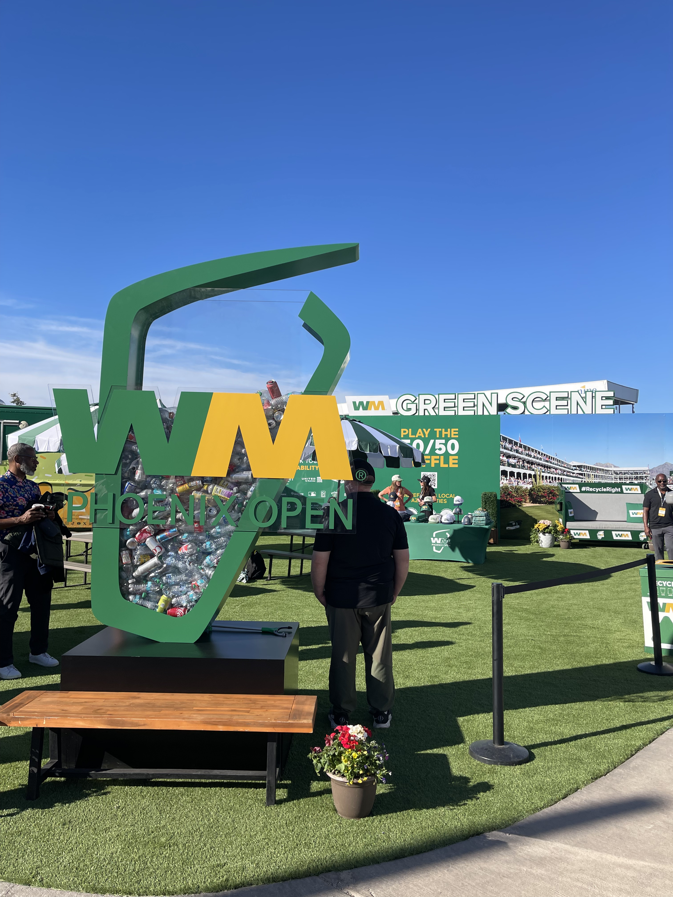
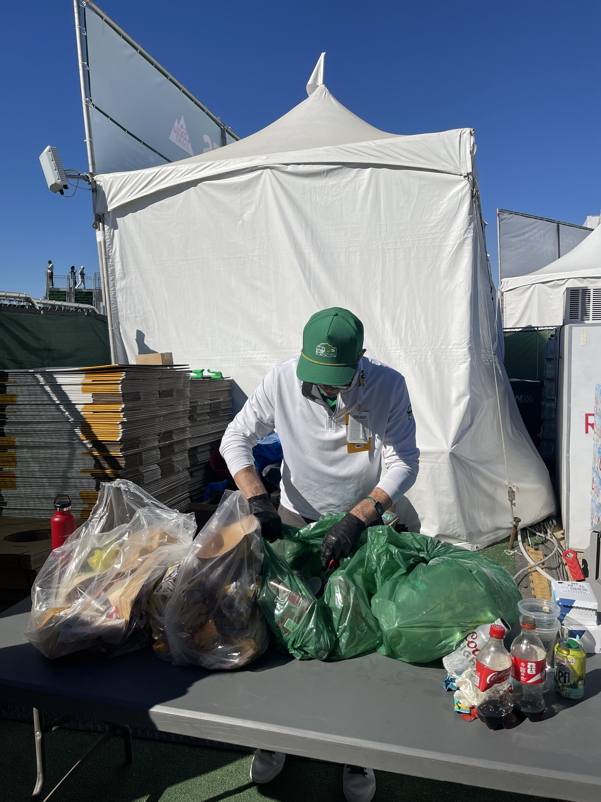

At the WM Phoenix Open, sustainability doesn’t look like a lecture.
It looks like beer cups without trash cans. A stadium that gets taken apart and used again. Food scraps turning into compost instead of landfill. A golf tournament so rowdy it barely resembles golf at all, yet quietly operates as one of the most sustainable sporting events in the world.
For many fans, the word “sustainability” can feel abstract or overwhelming — a catch-all term that sounds important but hard to pin down. At the WM Phoenix Open, organizers say the goal is to make it simple enough that people participate without even realizing it.
“I think everybody has a little bit of confusion around what sustainability means and what they can do for the environment,” said Mike Watson, WM’s chief customer officer. “That’s why we really make it simple. You can see there’s no garbage containers on the course. You see compost, recycling.”
In layman’s terms, sustainability at the WM Open boils down to a few basic ideas: use less, reuse more and don’t waste what still has value. That philosophy is built into nearly every part of the tournament, from how the grandstands are constructed to what happens after fans toss away a drink.
The most striking example might be the 16th hole itself, a temporary stadium that hosts some of the loudest moments in professional golf. Despite its size and spectacle, the structure is designed to be reused.
“That’s reusable, which is wild to say,” said Lee Spivek, director of advisory services for WM. “This year it’s almost entirely aluminum. It’s going to be deconstructed, parts will be used at other events, and the rest will be stored and reused year after year.”
Sustainability, Spivek noted, isn’t always driven by environmental ideals alone. Financial incentives matter too. But the result is the same: fewer materials wasted and less need to rebuild from scratch each year.

That practical mindset extends beyond construction. During the tournament, food scraps are composted through Arizona-based partners. Wine and liquor bottles are turned into reusable glassware. Leftover food is donated to the local community.
Even the cups fans drink from are designed with reuse or recycling in mind, including bamboo utensils and zero-waste packaging tied to fundraising efforts for WM’s Working For Tomorrow Fund.
“And what really makes me the most proud,” Watson said, “is it’s where our brand and what we do every day to innovate around sustainability, the sport of golf and entertainment coincide.”
How sustainability works at the WM Open
Tap each step to explore how sustainability is built into the tournament.
Construction
The massive 16th hole stadium is built using modular aluminum components that can be dismantled, stored and reused in future years instead of discarded.
Waste sorting
Every bag of compost and recycling is manually sorted to ensure materials are properly processed instead of sent to landfills.
Food and compost
Food scraps from concessions are composted through local Arizona partners rather than becoming landfill waste.
Reuse and recycling
Wine and liquor bottles are repurposed into reusable glassware, while bamboo utensils and zero-waste packaging help reduce disposable plastics.
Community impact
Leftover food is donated locally, and proceeds from special products like tournament-themed ice cream support the Working For Tomorrow Fund.

What fans don’t see is the amount of planning required to make that education feel invisible.
“It is a lot of work,” Watson said. “Year-round preparation, hundreds of people here making sure this is a world-class zero-waste event.”
That behind-the-scenes effort has caught the attention of other sports leagues and venues. WM’s advisory services group now works with four professional sports leagues, more than 20 venues and a dozen golf tournaments nationwide.
“Large transient populations coming through with complicated supply chains. That describes so many circumstances,” Spivek said. “You can pull things out of this and make it relatable to basically any business.”
Even the tournament’s imperfections are part of the lesson. While the WM Phoenix Open diverted the vast majority of its waste from landfills, some materials were still disposed of due to logistical challenges.
Organizers say transparency matters, because sustainability isn’t about perfection, but progress.
“We’ve spent a number of years with WM focusing on diversion programs for waste,” said Thunderbird and assistant tournament chairman Chris Camacho. “We’ve also looked at water conservation strategies to ensure we become the most sustainable tournament on the PGA Tour.”
For fans, the takeaway isn’t a stat sheet or a slogan. It’s the idea that sustainability doesn’t have to feel heavy, inconvenient or preachy. Sometimes it’s just about building systems that work — even in the middle of the loudest party in golf.